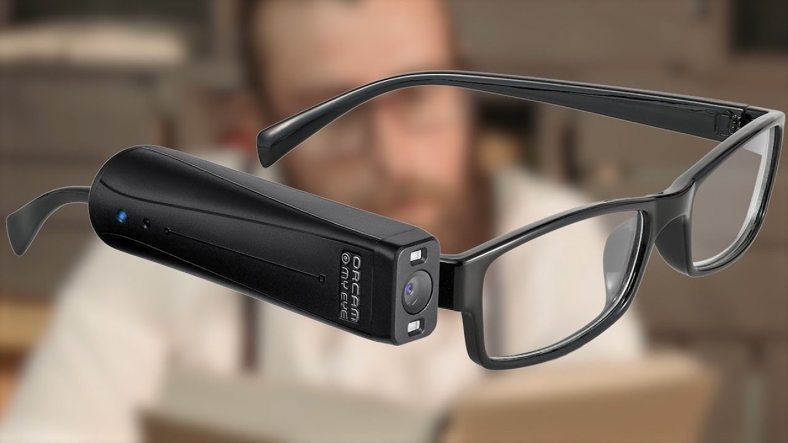

الموارد والأدوات المساعدة
أدوات التكنولوجيا المساعدة

هناك العديد من الأدوات التي تساعد ضعاف البصر في حياتهم اليومية:
- قارئات الشاشة: برامج تحول النص المكتوب إلى صوت مسموع.
- المكبرات الرقمية: تطبيقات وأجهزة لتكبير النصوص والصور بدقة عالية.
- تطبيقات التعرف على الأشياء: تطبيقات تستخدم الذكاء الاصطناعي لوصف المحيط والتعرف على العملات والألوان.
نصائح للحياة اليومية
الإضاءة والتباين
استخدم إضاءة موجهة للمهام التي تتطلب دقة، واحرص على وجود تباين لوني عالٍ بين الأشياء (مثل وضع طبق أبيض على مفرش طاولة أسود).
التنظيم المنزلي
حافظ على ترتيب ثابت للأثاث والأدوات المنزلية لتسهيل التنقل والوصول للأشياء دون عناء.
روابط مفيدة
يمكنك استكشاف المزيد من خلال هذه المصادر: